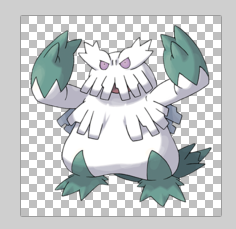

Only Get Non-Alpha Pixels in an Image
This week, I found myself wanting to do some computation over pixels in an image.
This image, in fact
from PIL import Image
im = Image.open('images/Abomasnow.png')
im
In particular, I wanted to run K-means clustering over the image to determine what the 3 most popular colors were– visually, I expected to see something like green, white, and maybe pink/gray(?)
A First Pass
I load my Image object into numpy.array that sklearn can eat
import numpy as np
arr = np.array(im)It’s a 200 by 200 image, so this should work pretty quickly.
arr.shape(200, 200, 4)
Building and training the model is easy enough.
We want a KMeans object instantiated with 3 means.
from sklearn.cluster import KMeans
model = KMeans(3)Next, we’re going to take our 200 x 200 x (RGB) values and put them into one, 40000 x 3 matrix (pixel location doesn’t matter for K-means)
reshaped_arr = arr[:, :, :3].reshape(-1, 3)
reshaped_arr.shape(40000, 3)
Fit the model
model.fit(arr[:, :, :3].reshape(-1, 3))KMeans(algorithm='auto', copy_x=True, init='k-means++', max_iter=300,
n_clusters=3, n_init=10, n_jobs=None, precompute_distances='auto',
random_state=None, tol=0.0001, verbose=0)
Aaaaaand our means
model.cluster_centers_array([[105.41553813, 132.43644571, 131.09289617],
[232.71566397, 231.75916993, 235.93683444],
[ 1.47778587, 1.78674436, 1.75863074]])
We’ve got gray
Image.new('RGB', (300, 100), color=(232, 231, 235))Greenish
Image.new('RGB', (300, 100), color=(105, 132, 131))And… black?
Image.new('RGB', (300, 100), color=(1, 2, 2))What happened?
Did You Catch the Spoiler?
Let’s go back to our image array. We had a 4th value in our 3rd dimension. The first 3 account for R, G, and B. But the fourth represents alpha or the transparency.
arr.shape(200, 200, 4)
The image printed out nicely enough when we loaded it up
imBut if you were to open it up in some alpha-channel-aware software, like paint.net, you’d see that the background was actually transparent.
Image.open('images/alpha_channel.PNG')
Indeed, if you inspect a random pixel in the upper-left corner of this image, you’ll see that it’s got a 0 value for its alpha channel at the end, but critically, it gives us 0, 0, 0 RGB values. In other words, numpy thinks that like 40% of this picture is pure black.
arr[10, 10]array([0, 0, 0, 0], dtype=uint8)
Clearing out the Clear
So we want to re-run our clustering algorithm, this time only considering pixles with the max value for the alpha channel, 255
And so we’ll line all of the pixels up once more (including the alpha channel for the next step)
all_pixels = arr.reshape(-1, 4)
all_pixels.shape(40000, 4)
Then some basic numpy array filtering reveals that my 40% was actually closer to like 60-something
just_non_alpha = all_pixels[all_pixels[:, 3] == 255]
just_non_alpha.shape(18747, 4)
Refitting the model, we get new centers. Promising.
model = KMeans(3)
model.fit(just_non_alpha)KMeans(algorithm='auto', copy_x=True, init='k-means++', max_iter=300,
n_clusters=3, n_init=10, n_jobs=None, precompute_distances='auto',
random_state=None, tol=0.0001, verbose=0)
model.cluster_centers_array([[182.57885015, 183.38536135, 194.31147541, 255. ],
[252.58630872, 252.45704698, 252.62241611, 255. ],
[100.3142406 , 130.10723514, 128.00387597, 255. ]])
Again, we’ve got greenish
Image.new('RGB', (300, 100), color=(103, 130, 129))Gray
Image.new('RGB', (300, 100), color=(182, 183, 194))… and very, very white.
Image.new('RGB', (300, 100), color=(252, 252, 252))Oh well. The dude’s a snowman. Go figure. At least this one makes sense.